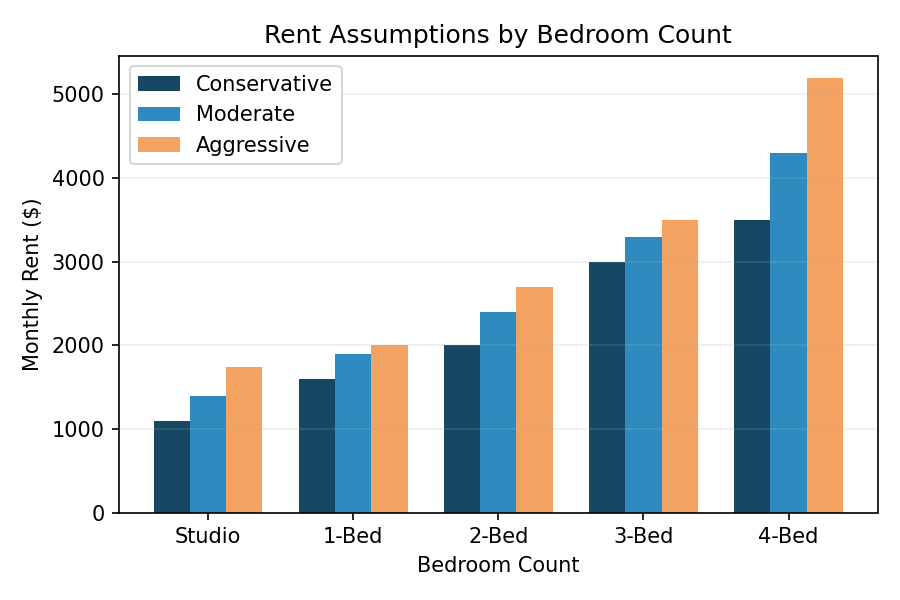
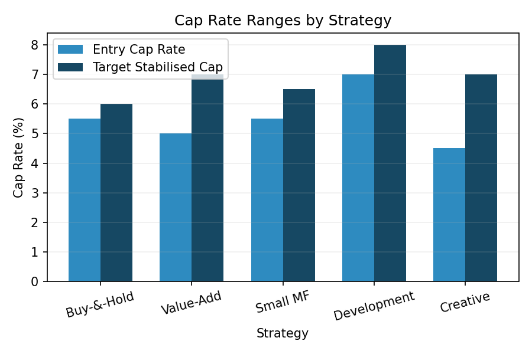
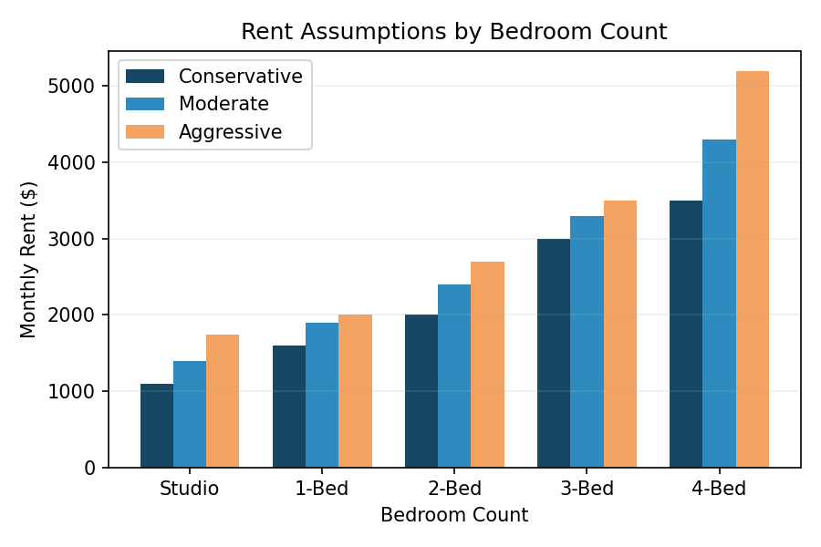
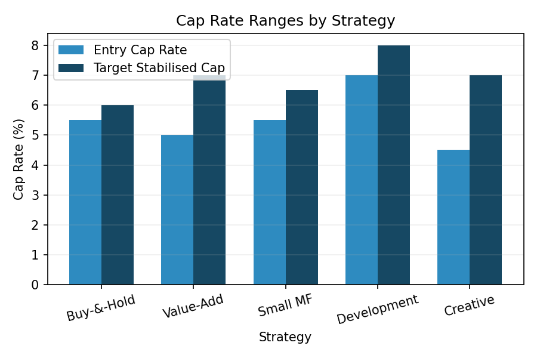

35 High St – Condo 1/1
- Price: $199k
- Estimated rent: $1,600/mo
- NOI: $12,480
- Entry cap: 6.5%
- Stabilised cap: 9.6%
- Notes: Low HOA; cosmetic refresh needed.
- Status: Recommended
- View listing
Access data‑driven insights, curated opportunities and clear strategies for building long‑term wealth in the Marlborough real‑estate market.
This app gives you a comprehensive view of the Marlborough real‑estate market. Use the menu (☰) in the top right to navigate between sections. Each tab presents research, opportunities and assumptions so you can make informed decisions. On phones, the menu slides in and out to save space.
Marlborough’s housing market has grown steadily thanks to strong life‑sciences and technology employers. Single‑family home prices rose from about $505k in 2021 to $615k in 2025, condos from $370k to $445k, and small multi‑family properties from $615k to $760k. Two‑bed rents average around $2.4k per month.
 



We ranked each strategy by expected risk‑adjusted return, balancing income, appreciation and execution risk.
Acquire well‑maintained single‑family homes or condos and hold for long‑term appreciation. Entry cap rates around 5–6%, with modest but stable cash flow.
Buy dated properties at a discount, renovate and reposition them to achieve higher rents and compressed cap rates. Stabilised cap rates can exceed 7%.
Acquire two‑ to four‑unit buildings for steady cash flow. Typical cap rates range from 5.5% to 6.5%, improving as rents are raised or units reconfigured.
Unlock value by subdividing large parcels or constructing new housing. Required yields are high (≥ 15%) to compensate for entitlement and construction risks.
Leverage the new ADU law to add accessory units or explore co‑living and short‑term rentals. Entry cap rates can be as low as 4%, but stabilised yields may exceed 7% once additional units are rented.
Each card summarises a current MLS listing that meets our Balanced or Growth profile criteria. Deals are labelled as Recommended or Watchlist. If no listings appear under a strategy, there are currently no qualifying properties.
No qualifying listings at this time. Upload refreshed MLS data to update this section.
No qualifying projects at this time. Upload refreshed MLS data to update this section.
No qualifying listings at this time. Upload refreshed MLS data to update this section.
These are the baseline inputs used for underwriting. Adjust them to reflect your outlook or to stress‑test deals.
| Bedrooms | Conservative | Moderate | Aggressive |
|---|---|---|---|
| Studio | $1,100 | $1,400 | $1,740 |
| 1‑Bedroom | $1,600 | $1,900 | $2,000 |
| 2‑Bedroom | $2,000 | $2,400 | $2,700 |
| 3‑Bedroom | $3,000 | $3,300 | $3,500 |
| 4‑Bedroom | $3,500 | $4,300 | $5,200 |
| Vacancy | 5% of gross rent |
|---|---|
| Operating Expenses | SF/Condo: 30–35%; Small MF: 38–45% |
| Property Tax | Residential: 0.986% of purchase price; Commercial/MF: 1.843% of purchase price |
| Financing | Interest rate: 6% (fixed); Loan‑to‑value: 65–70% |
| Metric | Conservative | Balanced | Growth |
|---|---|---|---|
| Entry cap threshold | ≥ 5.5% (SF/Condo), ≥ 6% (MF) | 5–5.5% (SF/Condo), 5.5–6% (MF) | 4.5–5% (SF/Condo), 5–5.5% (MF) |
| Expense ratio | 30–35% | 30–40% | 35–45% |
| Rent growth | 1–2% | 2–3% | 3–5% |
| Risk tolerance | Low | Moderate | High |
Our off‑market pipeline identifies privately held properties aligned with each strategy by analysing public records and owner behaviour. It combines data and personalised outreach to unlock hidden deals.
Our recommendations are backed by ten detailed analysis documents. For each summary below you can view the report in a new tab or download the DOCX file. Both actions open in a new tab so this page remains available; simply close the document tab to return.
Analyses MLS rental history and compares it with 2025–2026 market surveys (e.g., Zillow and RentCafe). Highlights time‑lag effects and differences in unit quality, and derives conservative, moderate and aggressive rent assumptions by bedroom count.
View full document | Download DOCXSummarises typical cap‑rate ranges by property type and explains macro drivers such as interest rates, supply constraints, ADU legislation, tenant protections, property taxes and Marlborough’s economic strengths. Details each strategy’s buy box, capital requirements and risk profile.
View full document | Download DOCXCompares Marlborough cap rates with those in Boston (average ≈5.1%) and the MetroWest suburbs. Explores how cap rates interact with interest rates, financing constraints and exit liquidity, and maps strategies to their reliance on cap‑rate compression, forced appreciation or income yield.
View full document | Download DOCXExplains formulas for estimating NOI using rent, vacancy, taxes and expense assumptions, defines minimum entry cap rates for each strategy, and outlines screening filters for cap‑rate upside, rent growth potential and development optionality.
View full document | Download DOCXShows that strict cap‑rate thresholds yield very few qualifying deals and proposes broader entry bands (e.g., 4.5–5.5% for value‑add) to broaden the opportunity set while staying grounded in market realities.
View full document | Download DOCXLists the MLS listings that met the Balanced and Growth profiles. Balanced opportunities: 35 High St (value‑add) and 111 Howe St (creative/ADU). Growth additions: 102 Liberty St, 688 Boston Post Rd E and 30 Broad St.
View full document | Download DOCXMerges the Balanced and Growth deals into a unified opportunity set, identifying 35 High St as the only recommended opportunity and placing the other properties on the watchlist due to HOA uncertainty, small lots or renovation risks.
View full document | Download DOCXStress tests each deal with more realistic expenses and taxes, flags those that appear attractive only under optimistic assumptions, and confirms that 35 High St is the lone high‑confidence listing.
View full document | Download DOCXCombines historic price and rent trends, regulatory context, cap‑rate dynamics and strategy analysis to conclude that value‑add and creative/ADU plays offer the best risk‑adjusted returns in Marlborough.
View full document | Download DOCXDefines the web app’s page structure, data model, calculation logic and refresh pipeline, showing how uploaded MLS data updates opportunity tables and summarising table structures for future features.
View full document | Download DOCX